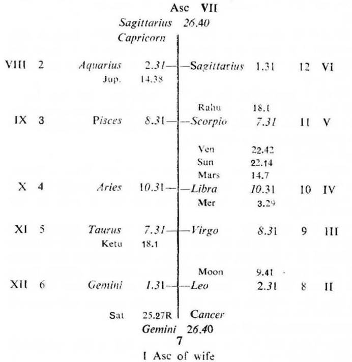

Question. My wife went to the market on 3-11-1974. She is missing since then. Is she alive or dead. When shall I get the news about her?
Number. 185 (out of 249)
Place of Judgment. 23°N 2', 72°E 35'
Time of Judgment. 8-11-1974, Friday; 4-0 p.m. I.S.T.

If the cuspal sub lord of 3 (news) is the significator (i. e. in the star of the occupant or owner) of 3 and 11 the querent will hear the news.
The querent will hear the news when the transitting Moon passes over the same degrees as that of the significators of 3 and 11; also when Moon transits the same degrees as that of the significator of the 3rd house of the missing person.
In this horary map the husband put the query about his wife. So consider the 7th cusp as the Asc. for the wife and proceed. For convenience the roman letter is given to each house counted from the 7th cusp.
Moon is aspected by Jupiter from VIII. Its sub lord Saturn which owns VIII (life) is in XII (missing) and on the cusp of the wife’s Asc. Thus it clearly shows that the query is about the wife who is missing and it is about her life.
Wife’s Asc. The cuspal sub lord of the wife’s Asc. is Venus. It is in the star Jupiter owning VII. So it is the significator both of the badhaka and maraka house. This means that the wife of the querent is dead.
Querent’s 3rd cusp. The cuspal sub lord of the querent’s 3rd house is Venus. It is in the star Jupiter owning 3. So it is the significator of 3. Further, this star lord Jupiter aspects the owner of 11 (Mars) and the cuspal sub lord Venus is in conj. with the owner of 11 (Mars). Thus the cuspal sub lord of the 3rd house Venus is connected also with the house 11. Hence the querent will hear the news about his wife.
Sun, Venus and Saturn (being in the star Jupiter owning 3) are the significators of 3.
Mars and Jupiter (being in the star Rahu in 11) are the significators of 11.
Rahu (being in the star Mercury owning and occupying III) is the significator of III.
The querent will hear the news that his wife is dead when the transitting Moon passes over the same degress as that of Mars, Sun and Venus on 13-11-1974 or on 15-11-1974 when Moon passes over the same degrees as that of Rahu which is in the 11th house of the querent. On 15-11-1974 the querent got the news that his wife was dead.